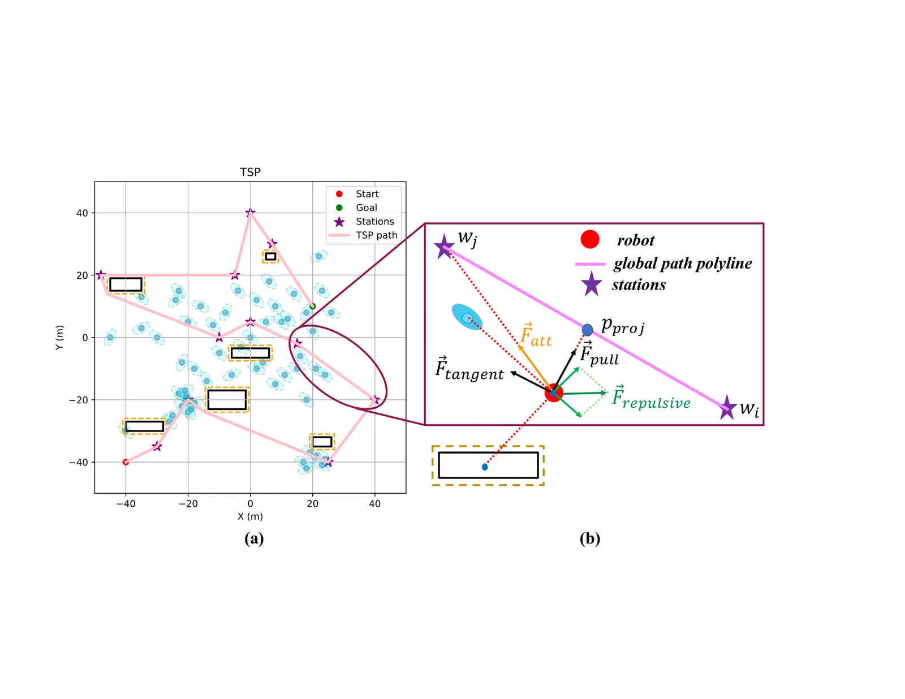
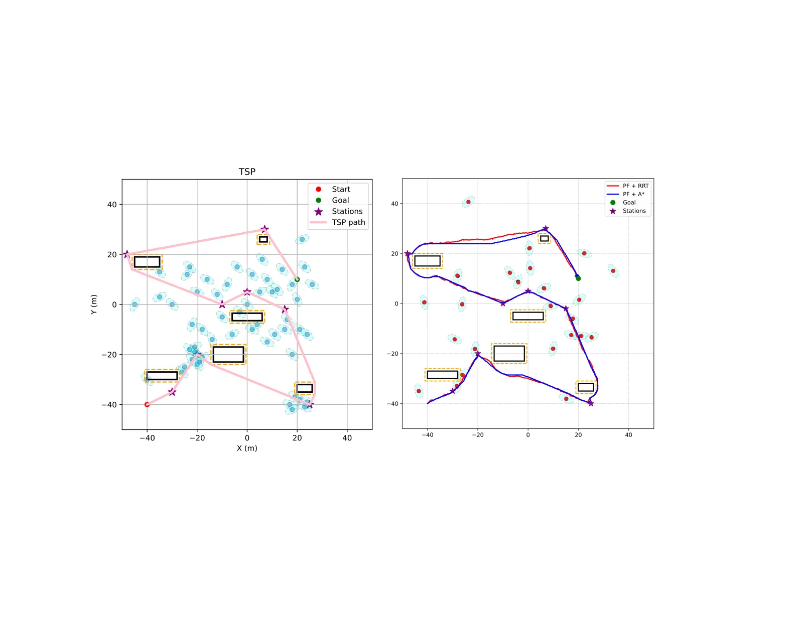

contexto_e_problema
A autonomia na mobilidade urbana e interna é um desafio clássico da robótica móvel, especialmente quando o agente é uma cadeira de rodas autônoma (ARW). Diferente de veículos autônomos em estradas, as ARWs operam em ambientes densamente povoados, com pedestres imprevisíveis, obstáculos estáticos e dinâmicos, e a necessidade crítica de interagir socialmente sem causar desconforto ou perigo. O objetivo não é apenas chegar ao destino, mas fazê-lo de forma segura, suave e eficiente, permitindo que usuários com limitações motoras recuperem independência sem fadiga física ou dependência de cuidadores.
O problema central abordado neste trabalho é a navegação multiobjetivo em ambientes dinâmicos. Uma tarefa típica pode envolver visitar várias estações intermediárias (como um bebedouro, uma porta ou um elevador) antes de alcançar o destino final. Isso transforma o problema de planejamento de caminho em uma combinação complexa: determinar a ordem ótima de visita (um problema de otimização combinatória) e, simultaneamente, garantir a evasão de obstáculos em tempo real, lidando com a incerteza do movimento humano.
Estudos anteriores frequentemente focam em cenários simplificados ou ignoram a complexidade da interação humano-robô. Métodos baseados apenas em Campos Potenciais (PF) tendem a falhar em mínimos locais em ambientes complexos. Métodos baseados em grafos, como A*, são eficientes em ambientes estáticos, mas podem ser rígidos diante de obstáculos móveis repentinos. Este paper propõe uma arquitetura híbrida que tenta unir o melhor dos dois mundos: planejamento global eficiente e reatividade local robusta.
metodologia_hibrida
O framework proposto, denominado TSP-PF-RRT e TSP-PF-A*, é estruturado em três camadas principais. A primeira camada é o planejamento global, que utiliza o Problema do Caixeiro Viajante (TSP) para determinar a sequência ótima de visitação dos waypoints (estações intermediárias). O TSP minimiza a distância total percorrida ao definir a ordem das paradas, resolvendo o aspecto combinatório da tarefa multiobjetivo. Este plano global serve como uma referência de alta nível para as camadas inferiores.
A segunda camada é o planejador local baseado em Campos Potenciais (PF). O PF atua como um mecanismo de controle que guia o robô ao longo da trajetória global definida pelo TSP, enquanto desvia de obstáculos. O campo potencial é composto por forças atrativas que puxam o robô em direção ao waypoint de destino e forças repulsivas que o empurram para longe de obstáculos detectados. Além disso, uma força tangencial é utilizada para alinhar a orientação do robô com a trajetória global, evitando que ele se desvie excessivamente do caminho planejado.
A terceira camada introduz a robustez contra obstáculos dinâmicos e complexos através de planejadores locais heurísticos: Rapidly-exploring Random Tree (RRT) ou A*. Quando o campo potencial encontra dificuldades, como armadilhas em espaços confinados ou obstáculos móveis que perturbam o equilíbrio das forças, esses algoritmos entram em ação. Eles geram caminhos viáveis locais que permitem ao robô contornar obstáculos estáticos e dinâmicos, realinhando-se posteriormente com a trajetória global. A escolha entre RRT e A* define as duas variantes do framework avaliadas neste estudo.

detalhes_algoritmicos
A implementação do TSP utiliza um algoritmo de otimização por Enxame de Partículas (PSO) para encontrar a sequência de visita de 11 waypoints, começando na posição inicial, visitando cada estação uma vez e terminando no objetivo final. O PSO é escolhido por sua eficiência em espaços de busca não lineares e multimodais, comum em problemas de roteamento. A saída do PSO é uma sequência de pontos que define a 'espinha dorsal' do trajeto.
No nível local, o Campo Potencial (PF) é configurado para manter o robô próximo à trajetória global. As forças Ftangent (tangencial) e Fpull (de atração) trabalham juntas para garantir que o robô siga a direção esperada. A componente repulsiva do PF é calculada com base na distância aos obstáculos detectados pelos sensores (LiDAR, câmeras estéreo). A inovação aqui não é o PF em si, mas sua integração com planejadores de busca mais robustos.
O RRT (Rapidly-exploring Random Tree) é um planejador baseado em amostragem que constrói uma árvore de caminhos explorando aleatoriamente o espaço de configuração. Ele é particularmente eficaz em espaços de alta dimensionalidade e ambientes complexos, onde a topologia é desconhecida ou muda rapidamente. O RRT é computacionalmente mais custoso, mas oferece maior flexibilidade para encontrar caminhos em meio a obstáculos densos. Já o A* é um algoritmo de busca em grafos que encontra o caminho de menor custo em um mapa discretizado. É mais rápido e determinista, mas assume um ambiente estático e pode ter dificuldade em re-planear rapidamente se o mapa mudar drasticamente devido a pedestres.
avaliacao_experimental
Para avaliar a eficácia do framework, os autores realizaram simulações de Monte Carlo. O uso de simulações é justificável porque o movimento de pedestres é estocástico e difícil de reproduzir exatamente em testes físicos repetidos. Duas cenários foram testados: 'crowded' (movimentado) e 'extra-crowded' (extremamente movimentado), contendo obstáculos estáticos e dinâmicos heterogêneos. Em cada cenário, foram realizadas 10 simulações independentes para cada algoritmo (TSP-PF-RRT e TSP-PF-A*), seguindo a mesma trajetória global de 8 waypoints definida pelo PSO.
As métricas de desempenho focaram em dois aspectos críticos: segurança e eficiência. A segurança foi medida pelo número de colisões com obstáculos durante a navegação. A eficiência foi medida pela distância total percorrida pelo robô. Uma distância maior indica que o robô teve que realizar manobras de desvio mais extensas para evitar obstáculos, o que pode aumentar o tempo de viagem e o desgaste do sistema.

resultados
Os resultados quantitativos, apresentados na Tabela 1 do paper, revelam diferenças significativas entre as duas abordagens, especialmente em cenários de alta densidade. No cenário 'crowded', o TSP-PF-RRT percorreu uma distância média de 319 metros com zero colisões. Já o TSP-PF-A* percorreu 340 metros e sofreu 2,8 colisões em média. Isso indica que, mesmo em ambientes moderadamente ocupados, o RRT conseguiu navegar com maior precisão e segurança.
A diferença torna-se mais dramática no cenário 'extra-crowded'. O TSP-PF-RRT manteve a marca de zero colisões, embora tenha aumentado a distância percorrida para 525 metros, o que é esperado devido à necessidade de manobras de desvio mais complexas. Por outro lado, o TSP-PF-A* sofreu 7,4 colisões em média, percorrendo 533,7 metros. O aumento no número de colisões do A* sugere que sua natureza baseada em grafos estáticos torna-o vulnerável quando a topologia do ambiente muda rapidamente devido ao movimento dos pedestres.
analise_critica
A superioridade do RRT no cenário dinâmico pode ser explicada pela sua natureza probabilística e sua capacidade de explorar o espaço de forma não estruturada. Enquanto o A* depende de uma grade pré-definida, o RRT pode encontrar caminhos em espaços contínuos e complexos, adaptando-se melhor a obstáculos móveis. No entanto, essa robustez vem com um custo: o RRT é computacionalmente mais demandante. Em sistemas embarcados com recursos limitados, como uma cadeira de rodas, a latência de cálculo pode ser um fator crítico.
O uso de Campos Potenciais como camada intermediária é uma escolha interessante para suavizar a transição entre o planejamento global e a evasão local. As forças tangenciais ajudam a manter o robô alinhado com o caminho, evitando que ele se desvie desnecessariamente. No entanto, os PFs são conhecidos por sofrerem com mínimos locais, onde o robô fica preso entre forças repulsivas de obstáculos adjacentes. A integração com o RRT ou A* serve justamente para escapar desses mínimos, mas o sucesso dessa escape depende da sensibilidade dos parâmetros de tuning.
limitacoes_e_futuro
O paper reconhece várias limitações e direções futuras. Atualmente, o framework foi validado apenas em simulações de Monte Carlo. A transição para o mundo real envolve desafios adicionais, como ruído nos sensores, atrasos de comunicação e a necessidade de classificação de obstáculos. Pedestres, outras cadeiras de rodas e objetos estáticos devem ser tratados de forma diferente, exigindo estratégias de interação comportamental mais sofisticadas.
Os autores sugerem a integração de mapas globais no computador de bordo e o uso de sensores GNSS, LiDAR e câmeras estéreo para navegação em ambientes externos. Além disso, propõem que o sistema permita aos usuários especificar destinos em um mapa, dando controle sobre a ordem de visitação dos waypoints. Isso adiciona uma camada de usabilidade, mas também aumenta a complexidade do planejamento.
Outra limitação é a suposição de que o ambiente é parcialmente observável. Em cenários reais, a percepção pode ser obstruída por obstáculos grandes ou condições de iluminação. A robustez do framework em situações de percepção degradada não foi avaliada. Além disso, a segurança em cenários de 'armadilha', onde o robô é cercado por pedestres em movimento, ainda é um problema aberto, como indicado pelas colisões do A*.
conclusao
Este paper apresenta uma contribuição válida para o campo da navegação de robôs móveis em ambientes humanos. A combinação de TSP para planejamento global e PF para controle local, reforçada por planejadores de busca como RRT, oferece uma solução robusta para problemas multiobjetivo. Os resultados mostram que o RRT é superior ao A* em ambientes dinâmicos, embora com maior custo computacional.
Para desenvolvedores e pesquisadores, o takeaway principal é a importância da arquitetura híbrida. Abordagens puramente baseadas em PF ou em grafos estáticos são insuficientes para a navegação autônoma segura em ambientes reais. A integração de camadas de planejamento com diferentes níveis de abstração e complexidade computacional é essencial para equilibrar eficiência e segurança.
O trabalho abre caminho para futuras pesquisas em classificação de obstáculos, interação humano-robô e implementação em hardware real. A validação em cenários reais com usuários finais será o próximo passo crítico para determinar se a robustez observada em simulação se traduz em confiança e conforto para os usuários de cadeiras de rodas autônomas.
O que fica
- Framework híbrido combina TSP (global), PF (local) e RRT/A* (evasão) para navegação multiobjetivo segura.
- TSP-PF-RRT evitou colisões em cenários dinâmicos, superando o TSP-PF-A*, que sofreu colisões em ambientes densos.
- RRT é mais robusto a obstáculos móveis, mas mais custoso computacionalmente que o A* estático.
- Validação foi feita em simulações; implementação real requer classificação de obstáculos e integração sensorial avançada.
Paper original: A Hybrid Path Planning Framework for Assistive Wheelchair Navigation in Dynamic Pedestrian Environments
Comentários
Nenhum comentário ainda. Seja o primeiro.